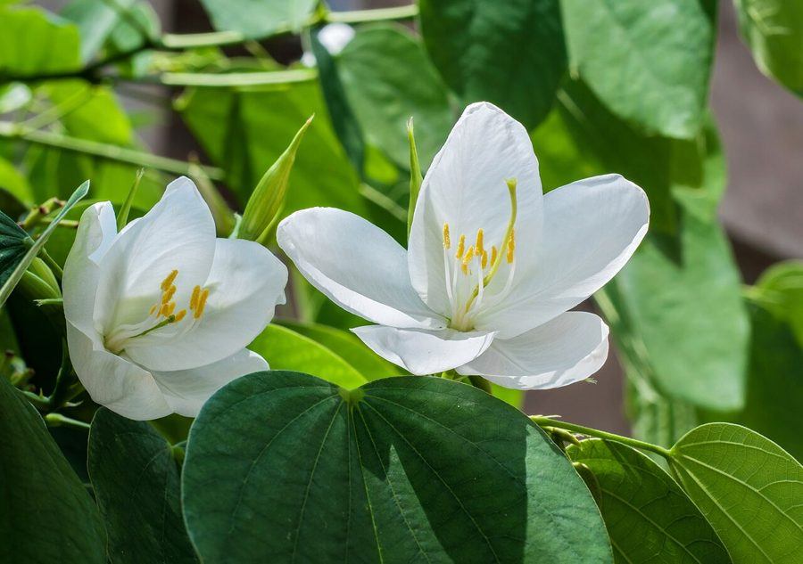

ड्वार्फ व्हाइट बौहिनियाDwarf White Bauhinia
Bauhinia acuminata · Fabaceae · FLR-0346

- Scientific name वैज्ञानिक नाम
- Bauhinia acuminata L.
- Family कुल
- Fabaceae
- Hindi हिंदी
- ड्वार्फ व्हाइट बौहिनिया
- Local names स्थानीय नाम
- dwarf white bauhinia, safed kachnar, bauhinia acuminata, white orchid tree, chota kachnar
- Status here यहाँ की स्थिति
- cultivated
- Movement आवागमन
- Resident, here all year
- Known from कहाँ दर्ज
- Others have published records from the Basti–Ayodhya districts बस्ती–अयोध्या के ज़िलों से दूसरों के प्रकाशित अभिलेख
- IUCN IUCN
- not evaluated
- Review समीक्षा
- not yet reviewed
When to look कब देखें
Expected mainly in March, April, May, June, July, August, September, October. मुख्यतः मार्च, अप्रैल, मई, जून, जुलाई, अगस्त, सितंबर, अक्टूबर में अपेक्षित।
Uses and possibilities उपयोग और संभावनाएँ
“Traditional medicine” means a documented traditional use, not a claim that it works. Nothing on this page is medical advice.
Drawn from the documented uses in the profile below, where each is labelled traditional, current or a research lead. All uses →
Tell it apart from इनसे अलग पहचानें
ड्वार्फ व्हाइट बौहिनिया / Dwarf White Bauhinia
Bauhinia acuminata L. — Fabaceae
ड्वार्फ व्हाइट बौहिनिया — बागीचों और आंगनों में उगाई जाने वाली एक छोटी, खूबसूरत और शुद्ध सफेद फूलों वाली झाड़ी। इसे आमतौर पर 'सफेद कचनार' या 'छोटा कचनार' कहा जाता है। इसके पत्ते ऊंट के खुर जैसे दो हिस्सों में बंटे होते हैं और गर्मियों में इस पर बर्फ जैसे सफेद पांच पंखुड़ियों वाले फूल खिलते हैं जिनमें सुनहरे परागकोश चमकते हैं।
Quick Identification त्वरित पहचान
| Feature | Description |
|---|---|
| Habit | Small, erect, deciduous woody shrub or miniature tree |
| Leaves | Distinctly two-lobed (bifid), lobes ovate and sharply acuminate at apex |
| Flowers | Large, snowy pure white, saucer-shaped with ten fertile stamens |
| Anthers | Golden-yellow, providing vivid contrast against the pure white petals |
| Pod | Flat, firm, strap-shaped woody legume with a sharp pointed beak |
Field tip: Look in gardens or temple grounds during summer for a low shrub with camel-foot leaves bearing large, snow-white orchid-like flowers with ten prominent yellow stamens.
हिंदी — कैसे पहचानें: शुद्ध सफेद कचनार जैसे फूल, ऊंट के खुर जैसी दो फांक वाली पत्तियां, और दस पीले पुंकेसर।
Morphology आकारिकी
Shrub description: Erect, deciduous shrub or slender small tree. Bark smooth, greyish-brown; young branches slightly angled, finely puberulous, soon glabrescent. Leaves alternate, petiolate, suborbicular, cordate or truncate at base, bilobed one-third to one-half down into two ovate, erect, acutely acuminate lobes; main veins nine to eleven radiating from petiole insertion, prominently reticulate beneath; petiole grooved above. Inflorescence a short, axillary or leaf-opposed, few-flowered raceme. Calyx spathaceous, cleft down one side, terminating in five small setaceous teeth. Petals five, pure snowy-white, subequal, oblong-elliptic, spreading, not overlapping. Stamens ten, all fertile, filaments white, anthers bright yellow. Pod straight, strap-shaped, firmly coriaceous, beaked, five to eleven seeded.
हिंदी: यह एक छोटी झाड़ी या नन्हा पेड़ है।
Behaviour & Ecology व्यवहार और पारिस्थितिकी
- Summer Flowering Phenology: Starts flowering in April as weather warms, continuing to produce crisp white blossoms into the monsoon rains.
- Crepuscular Pollination: The large white flowers open late in the day and remain fresh into the night, attracting nocturnal hawk moths and early morning bees.
- Nyctinastic Leaf Movement: The two lobes of each leaf fold together along the central vein at night and during excessive midday heat.
- Self-Cleaning Pods: Ripe pods twist open with audible snaps on sunny winter afternoons, propelling seeds away from the parent shrub.
हिंदी: इसके सफेद फूल शाम को खिलते हैं और रात के पतंगों को आकर्षित करते हैं। रात में इसकी पत्तियां मुड़कर बंद हो जाती हैं।
Life Cycle / Phenology जीवन चक्र
- Leaf Flush: Fresh pale green leaves emerge in March followed immediately by flower buds.
- Prolonged Blooming: Blossoms open continuously from April through August in warm humid conditions.
- Pod Development: Slender green pods grow through the rainy season, drying to rigid dark brown legumes by December.
- Seed Ripening: Seeds mature in late winter; shrub sheds much of its foliage briefly before spring renewal.
हिंदी: मार्च में नई पत्तियां और अप्रैल से अगस्त तक फूल आते हैं। सर्दियों में फलियां सूखकर चटकती हैं।
Associated Species / Interactions संबंधित प्रजातियाँ
- Butterfly Larval Host: Food plant for caterpillars of the common emigrant (Catopsilia pomona) and mottled emigrant (Catopsilia pyranthe).
- Nocturnal Visitors: Pollinated by sphingid hawk moths seeking copious nectar rewards.
- Shelter Associations: Provides shaded branches utilized by Indian garden lizards, often planted near sacred peepal enclosures.
हिंदी: सफेद और पीली तितलियों के बच्चे इसकी पत्तियां खाते हैं। रात में बड़े पतंगे इसके फूलों का रस पीते हैं।
Pests and Diseases कीट और रोग
- Leaf Webbers: Pyralid moth caterpillars web leaves together and skeletonize foliage during the monsoon.
- Pod Borers: Small bruchid beetles bore into developing pods and feed on green seeds.
- Canker: Fungal canker occasionally affects older woody stems under waterlogged conditions.
हिंदी: बरसात में इल्लियां पत्तों को जाले से बांधकर खाती हैं और भृंग फलियों के अंदर छेद कर देते हैं।
Agricultural / Human Relevance कृषि प्रासंगिकता
- Ornamental Gem: Highly valued in domestic courtyards, school premises, and urban gardens for its pure white blossoms.
- Compact Hedge: Because of its modest height, it fits perfectly in small gardens where larger Bauhinia trees are too massive.
- Traditional Uses: Bark and flowers are used in folk medicine for soothing skin irritations and treating digestive complaints.
हिंदी: छोटे आकार और सफेद फूलों के कारण यह घरों और बागीचों में लगाने के लिए बहुत लोकप्रिय है। इसका उपयोग पारंपरिक औषधियों में भी होता है।
Expected Locally स्थानीय रूप से अपेक्षित
Not a field record. Written from published accounts for eastern Uttar Pradesh. No confirmed local sighting yet — if you have seen it, that is what the atlas needs.
अभी तक स्थानीय पुष्टि नहीं। यह विवरण प्रकाशित स्रोतों से है, किसी अवलोकन से नहीं।
Expected in cultivated gardens, public parks, and temple enclosures across Basti and Ayodhya. GBIF holds published records from these districts. To confirm this species for the Atlas, provide a clear photograph showing white flowers and bifid leaves, along with date, time, and specific location.
Distribution वितरण
Global range: Native to South and Southeast Asia, including India, Sri Lanka, Myanmar, Thailand, Malaysia, and Indonesia.
In India: Cultivated throughout the country; indigenous in dry deciduous forest margins of central and eastern India.
In Uttar Pradesh: Documented from garden plantings and semi-wild grounds in Lucknow, Ayodhya, Basti, and Varanasi.
In Basti district / eastern UP: Expected in private home gardens, temple premises, public parks, and forest rest houses across Basti and Ayodhya.
हिंदी: यह पौधा भारत और दक्षिण-पूर्व एशिया का मूल निवासी है। उत्तर प्रदेश के बागीचों और पार्कों में यह बहुत आम है।
Research Questions शोध प्रश्न
- What proportion of Bauhinia acuminata flowers set fruit through nocturnal versus diurnal pollination? / रात के पतंगों और दिन की मधुमक्खियों द्वारा परागण से फल बनने का क्या अनुपात है?
- How does seasonal soil moisture variation impact the duration of nyctinastic leaf closure? / मिट्टी में नमी की कमी होने पर रात में पत्तियां बंद रहने का समय किस प्रकार बदलता है?
- What is the contribution of this compact shrub to native emigrant butterfly breeding in urban Ayodhya? / अयोध्या के पार्कों में तितलियों के प्रजनन में इस पौधे का कितना योगदान है?
- How does seed pod dehiscence velocity correlate with ambient midday temperature in winter? / सर्दियों में तेज धूप में फलियों के चटकने और बीज फेंकने की गति का क्या संबंध है?
- Can Bauhinia acuminata root nodulation improve soil nitrogen levels in degraded urban plots? / क्या इस पौधे की जड़ों में रहने वाले बैक्टीरिया बंजर जमीन की उर्वरता बढ़ा सकते हैं?
Similar Species मिलती-जुलती प्रजातियाँ
| Species | How to tell apart | हिंदी |
|---|---|---|
| Bauhinia variegata | Substantial tree; flowers pink, purple, or white with fifth petal variegated; five stamens | बड़ा पेड़, गुलाबी या बहुरंगी फूल, पांच पुंकेसर |
| Bauhinia tomentosa | Large shrub; flowers drooping, bell-shaped, pale yellow with dark purple throat spot | लटकते हुए पीले फूल जिनके अंदर जामुनी धब्बा होता है |
| Bauhinia purpurea | Medium tree; flowers reddish-purple with three fertile stamens; autumn bloomer | मध्यम पेड़, लाल-बैंगनी फूल, तीन पुंकेसर |
Field rule: A low shrub with two-lobed camel-foot leaves bearing pure snowy-white saucer-shaped flowers with ten fertile yellow stamens identifies Bauhinia acuminata.
Taxonomy & Classification वर्गीकरण
Original description. Described by Carl Linnaeus in 1753 as Bauhinia acuminata in Species Plantarum, vol. 1, p. 376.
Subspecies. Monotypic across northern India; placed in the subfamily Cercidoideae.
Family and order placement. Placed in the family Fabaceae, subfamily Cercidoideae, in the order Fabales.
IUCN status rationale. Not evaluated by the IUCN; abundant, secure, and widely cultivated across tropical Asia.
हिंदी: कार्ल लिनिअस ने 1753 में इसका वैज्ञानिक विवरण दिया था। यह फैबेसी कुल की झाड़ी है।
Photo Gallery फोटो गैलरी
No photos yet — add field photos to media/species/dwarf_white_bauhinia/ and run node scripts/sync_photos.js.
Photos needed आवश्यक फोटो
- [ ] Pure white five-petaled flower showing ten golden stamens (दस पीले पुंकेसरों वाला शुद्ध सफेद फूल)
- [ ] Distinctly bilobed acuminate leaf with radiating veins (ऊंट के खुर जैसी दो फांक वाली पत्ती)
- [ ] Flat beaked woody seed pod on branch (टहनी पर लगी चपटी नुकीली फली)
References संदर्भ
- Linnaeus, C. (1753). Species Plantarum, vol. 1, p. 376. Holmiae.
- Duthie, J.F. (1903). Flora of the Upper Gangetic Plain and of the Adjacent Siwalik and Sub-Himalayan Tracts, vol. 1, p. 299. Government of India, Calcutta.
- Hooker, J.D. (1878). The Flora of British India, vol. 2, p. 276. L. Reeve & Co., London.
- Brandis, D. (1906). Indian Trees: An Account of Trees, Shrubs, Woody Climbers, Bamboos and Palms, p. 256. Archibald Constable & Co., London.
- Kirtikar, K.R. & Basu, B.D. (1935). Indian Medicinal Plants, vol. 2, p. 896. Lalit Mohan Basu, Allahabad.
- GBIF Occurrence Data — Bauhinia acuminata L., India (2025).
Source file: species/flora/shrubs/dwarf_white_bauhinia.md